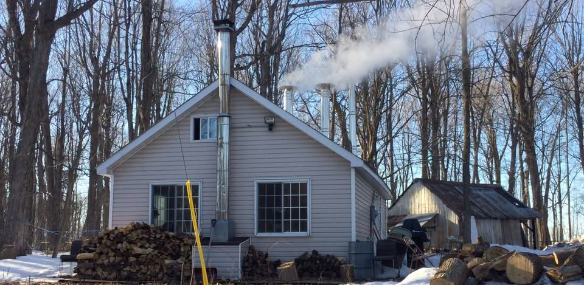

Sucrerie o'Ryans — Cabane à sucre
Du bois à la table — Sirop d'érable depuis 2014
Une cabane à sucre artisanale en Ontario qui produit du sirop d'érable pur à chaque printemps, avec passion, rigueur et savoir-faire.

Photo à venirSucrerie o'Ryans — Cabane à sucre
Une cabane à sucre artisanale en Ontario qui produit du sirop d'érable pur à chaque printemps, avec passion, rigueur et savoir-faire.

Photo à venir